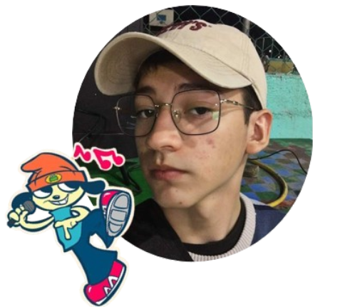
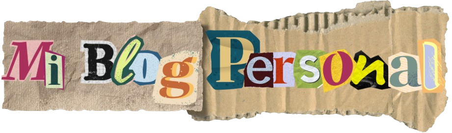
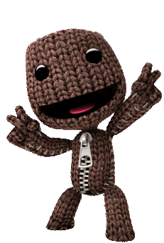
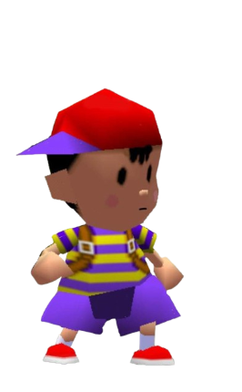
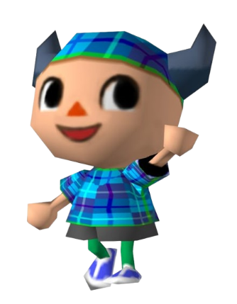
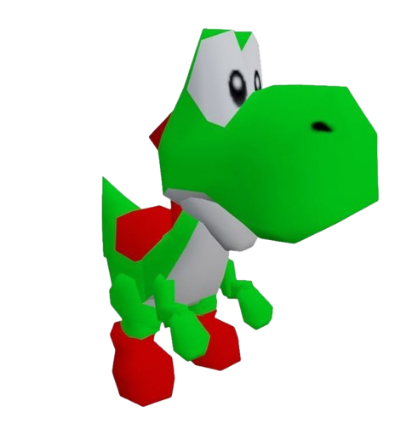

– – – – – – – – – – – – –
   
Instagram
Youtube
Discord
Tiktok
Reddit
✅Mas Sobre mis Pasatiempos
🔹Mas sobre mis avances
⭐Mas sobre mis metas a futuro

Bienvenido a Mi Rincon Digital
Sobre Mí
Hola, soy Axl, un estudiante de 12BTP Informática apasionado por la tecnología y el desarrollo web.
Actualmente, estoy creando mi primer proyecto web, y esta página es una muestra de mi aprendizaje y creatividad.
Nací y vivo en Honduras, un país lleno de cultura, historia y paisajes hermosos. Soy el hijo menor de mi familia, lo que me ha dado la oportunidad de aprender de mis hermanos y crecer con diferentes influencias.
Mis pasatiempos incluyen:
✅ Música – Siempre estoy escuchando algo nuevo, desde rock hasta electrónica.
✅ Dibujo – Me encanta plasmar ideas en papel y explorar mi creatividad.
✅ Animales Marinos – Son fascinantes y misteriosos, me gusta aprender sobre ellos.
✅ Comida – Disfruto probar diferentes platillos y sabores.
✅ Videojuegos – Desde aventuras épicas hasta shooters competitivos.
✅ Anime – Me encanta sumergirme en historias increíbles y emocionantes.
¿Por qué este vlog?
Decidí crear este vlog personal para compartir un poco más sobre mí, mis intereses y mi proceso de aprendizaje en el mundo del desarrollo web. Aquí iré publicando sobre:
🔹 Mis avances en programación – Proyectos, códigos y experiencias en informática.
🔹 Reflexiones personales – Pensamientos sobre la vida, motivación y crecimiento.
🔹 Mis hobbies – Cosas que me apasionan y quiero compartir con ustedes.
🔹 Recomendaciones – Anime, videojuegos, música, comida y más.
Mis Metas a Futuro 🚀
Ahora que estoy cerca de cumplir 18 años, tengo muchas metas en mente:
⭐ Mejorar en el desarrollo web y aprender más sobre programación.
⭐ Crear proyectos más grandes y útiles.
⭐ Explorar nuevas áreas como la inteligencia artificial y la ciberseguridad.
⭐ Conocer más sobre diseño gráfico y arte digital.
⭐ Seguir descubriendo y disfrutando lo que me apasiona.
¡Únete a mi aventura!
Si te gusta lo que comparto o tienes alguna recomendación para mejorar esta página, ¡déjamelo saber! Puedes contactarme a través de:
📧 Correo: axl.ayala.01360@maristascomayagua.edu.hn
Este es solo el comienzo, y cada día aprendo algo nuevo. ¡Espero que disfrutes este espacio tanto como yo! 🚀💻🎮
©2025 todos los derechos de autor reservados
Desarrollado por
David Ayala Castillo